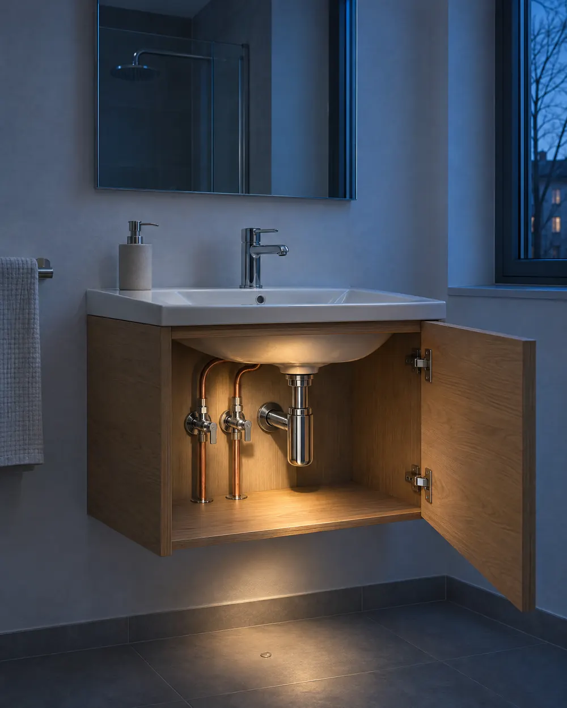
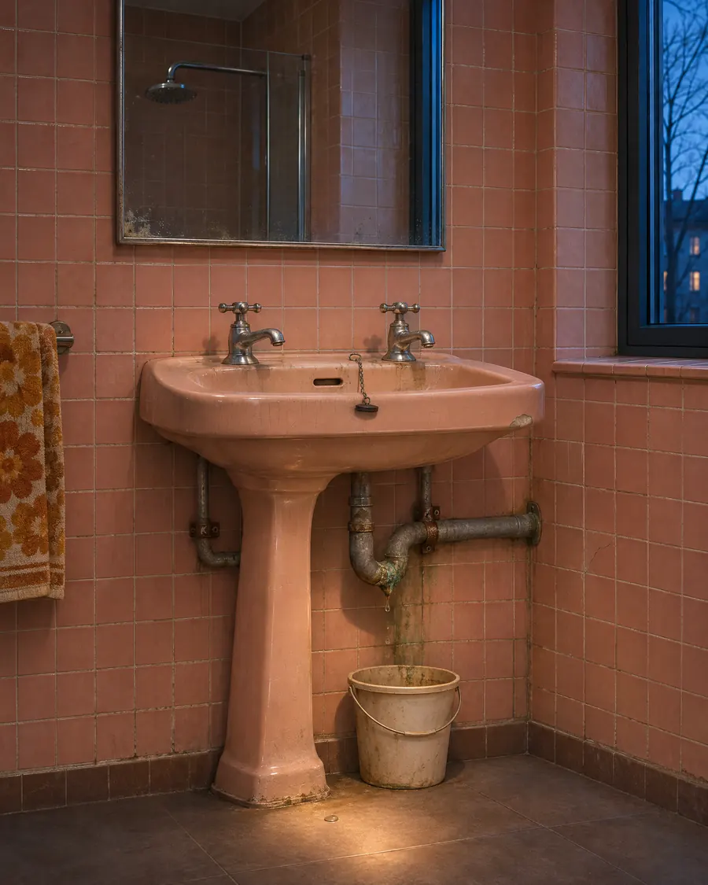

Accueil / Plomberie
Ça fuit ? Coupez, on arrive.
Fuites, canalisations bouchées, chauffe-eau, salle de bain complète. Le dépannage le jour même, les travaux sur devis écrit.
Ce que la lampe a trouvé
Une tache qui grandit sur le plâtre : un raccord goutte derrière.
- Coupez l'arrivée d'eau : la vanne est sous l'évier, dans le placard technique ou après le compteur.
- Si l'eau approche d'une prise, coupez aussi le disjoncteur général.
- Prenez une photo de la tache et de la vanne : on vient avec la bonne pièce.

On décroche de 7 h à 22 h, 7 jours sur 7
Prix du déplacement annoncé au téléphone
Devis écrit avant tout travaux
Couper l'eau, pas à pas
Cochez au fur et à mesure. Quand tout est coché, vous avez fait le nécessaire : l'eau est coupée, la fuite ne s'aggrave plus.

Vous êtes en…
Chaque minute compte
Une fuite sous pression peut lâcher plusieurs dizaines de litres en quelques minutes. Couper l'eau d'abord, appeler ensuite : c'est l'ordre qui limite les dégâts.
C'est fait. L'eau est coupée, la photo est prise. Appelez : on vient avec la bonne pièce.
Appeler maintenantCe qu'on fait
Dépannage le jour même
Prix du déplacement annoncé au téléphone.
- Fuite et dégât des eaux
- Recherche de fuite, réparation, remise en eau.
- WC, évier, douche bouchés
- Débouchage mécanique, sans produit agressif.
- Chauffe-eau
- Plus d'eau chaude, groupe de sécurité qui coule.
- Robinetterie
- Mitigeur qui goutte, chasse d'eau qui coule sans arrêt.
Travaux sur devis
Devis écrit et gratuit, avant de commencer.
- Salle de bain complète
- Dépose, plomberie, douche à l'italienne, faïence.
- Remplacement du chauffe-eau
- Choix du volume selon le foyer, reprise de l'ancien.
- Adoucisseur
- Pose et réglage, utile dans les communes au calcaire.
- Cuisine
- Raccordements de l'évier, du lave-vaisselle, du frigo américain.
Avant, après.
Les tuyaux galvanisés qui suintaient remplacés par du cuivre, vannes d'arrêt neuves, meuble suspendu. Glissez la barre pour comparer. Photos d'illustration : sur votre site, ce sont vos chantiers.


Les questions qu'on nous pose
Je ne trouve pas le robinet d'arrêt, je fais quoi ?
Appelez tout de suite, on vous guide au téléphone pendant que vous cherchez. En appartement, le syndic ou le concierge peut couper l'arrivée de l'immeuble.
Mon assurance prend-elle en charge ?
Le dégât des eaux est en général couvert par l'assurance habitation. On vous laisse une facture détaillée et les photos, c'est ce que l'assureur demande.
Vous débouchez avec des produits chimiques ?
Non. On débouche à la machine ou au furet : les produits abîment les canalisations et ne règlent pas le bouchon en profondeur.
Le prix change-t-il le soir ou le week-end ?
Le prix du déplacement vous est annoncé au téléphone avant qu'on parte, quelle que soit l'heure. Vous dites oui, on vient.